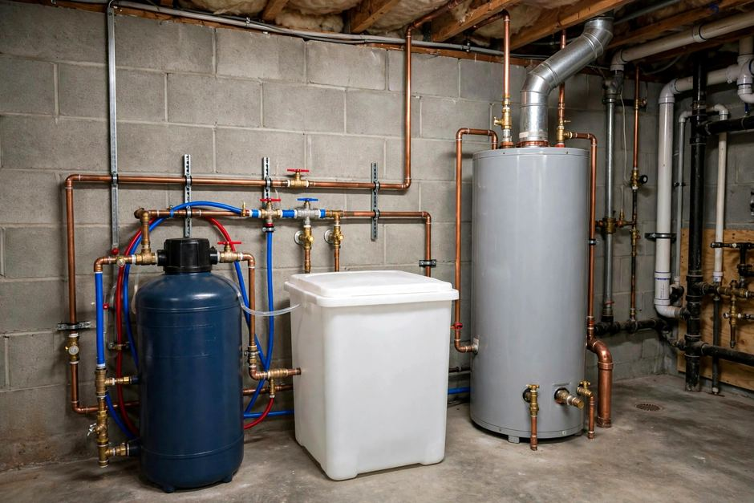

Tank water heater service in Belleville, Illinois
Water Heater Repair in Belleville, IL for Tank Water Heaters
No hot water, lukewarm water, and unusual noises from a tank unit can point to heating, valve, or connection faults that need review. Tank repair addresses the faulty part while keeping the existing tank, which differs from replacing the unit. Hinkle Plumbing Company reviews symptoms, checks the tank and connections, and discusses repair scope before work begins.
1610 W Main St, Belleville, IL 62220(618) 677-6556Monday through Friday, 8:00 AM to 4:30 PM. Closed Saturday and Sunday.
What tank repair covers
Water heater repair work for tank units in Belleville
Tank repair keeps the existing unit in place and addresses the part or connection at fault, from heating controls to valves and joints. Where the tank itself shows widespread failure, replacement becomes a separate discussion with different scope. For that separate scope, see water heater replacement in Belleville, IL and how a like-for-like tank swap differs from repair.
No hot water and lukewarm water
Loss of hot water or lukewarm output can trace to heating elements, burner operation, controls, or thermostat function in tank units. The review checks heating behavior and controls in context, rather than assuming the tank itself has failed.
Heating element and burner review
Electric elements and gas burners heat stored water through different arrangements, and faults show in different ways. The review checks the heating arrangement fitted to the unit, with venting and fuel connections reviewed as part of the layout.
Thermostat and control faults
Thermostats and controls regulate heating cycles, and faults can show as water that stays cool, overheats, or varies during use. Controls are checked for response and wiring condition, without settings presented as fixed rules for every home.
Valves, joints, and connections
Relief valves, drain valves, and pipe joints at the tank can seep or stick with age and mineral scale. The review checks each valve and joint for seepage, movement, and corrosion, and identifies the connection that needs attention.
Tank seepage and corrosion signs
Seepage at the tank base, rust-colored water, or corrosion at fittings can point to tank or connection deterioration. The review separates connection seepage, which may suit repair, from tank body failure, which points toward replacement discussion.
About Hinkle Plumbing Company
Tank repair from a Belleville plumbing company
Hinkle Plumbing Company reviews tank water heaters in Belleville, IL with repair kept distinct from replacement, so a faulty part does not become a full swap by default. Diagnosis shapes scope, and tank condition guides whether repair or replacement is discussed.
Hinkle Plumbing Company is based at 1610 W Main St, Belleville, IL 62220, and reviews tank water heaters for heating and valve faults. The Google rating is 5.0 from 3 reviews. Monday through Friday, 8:00 AM to 4:30 PM. Closed Saturday and Sunday. Tank units store heated water for use, which differs from tankless units that heat water as it flows, and each arrangement needs its own review. Mineral scale can reduce heating performance, so scale and sediment effects are checked as part of tank repair review.

How we workA tank water heater with valves and pipe connections reviewed in a Belleville home.
How tank repair proceeds
From symptom review to testing after repair
The steps flex with the condition of the job, but the sequence stays the same.
Symptom discussion by phone
The discussion reviews hot water symptoms, including loss of heat, lukewarm output, noises, odors, and visible seepage. Heater type, fuel arrangement, and the location of the unit are noted to shape the on-site review.
On-site tank and connection review
The tank, valves, joints, venting, and connections are reviewed, with attention to seepage, corrosion, and heating behavior. The layout around the unit is checked for access and for signs that point beyond the tank itself.
Fault identification and options
Testing and visual review narrow the fault to a heating part, control, valve, or connection, rather than assuming tank failure. Repair options are discussed against tank condition, so scope reflects the fault found during review.
Part or connection repair
Repair addresses the identified part or connection, with seals, valves, controls, or heating parts renewed as the fault requires. Connections are checked as work proceeds, and the unit is prepared for testing after repair.
Heating and leak testing
After repair, heating behavior is checked through a heating cycle, with valves and joints watched for seepage. Water temperature behavior and fixture output are reviewed, and findings shape any follow-up discussion about tank condition.
Repair methods
Tank repair methods by fault type
Tank repair methods follow the fault found, not a fixed routine, since heating, control, valve, and connection faults need different attention. Tankless units use different heating arrangements and controls, so they are reviewed separately from storage tanks. For the separate tankless scope, see tankless water heater services in Belleville, IL and how on-demand heating differs from stored hot water.
Heating part renewal
Heating elements or burner parts are renewed where testing points to a heating fault rather than a control or valve fault. The new part is matched to the unit arrangement, and heating behavior is checked after fitting.
Control and thermostat review
Controls and thermostats are checked for response, wiring condition, and heating cycle behavior. Where a control fault is found, the control is renewed and heating behavior is checked through operation.
Valve renewal and reseating
Relief and drain valves are checked for seepage, sticking, and corrosion at threads and seats. Renewal or reseating addresses the valve fault, with the valve and nearby joints checked for leaks after work.
Connection and joint repair
Pipe joints and connections at the tank are checked for seepage, corrosion, and movement that loosens seals. Repair reseats or renews the joint, with supply and hot water connections checked during testing.
Sediment and scale review
Sediment and mineral scale inside a tank can reduce heating performance and accompany noises during heating. The review checks for sediment and scale effects, and flushing or cleaning needs are discussed as part of repair scope.
Venting and safety review
Venting, clearances, and safety devices around the unit are reviewed as part of repair, since heating faults can involve more than the tank. Findings are discussed before repair scope is set, with attention to the layout.
Common patterns
Patterns in tank water heater repair calls
The patterns below describe common tank repair calls in general terms, without job details, to show how symptoms, review, and repair scope fit together. Each pattern starts with a change in hot water behavior and moves through review toward a defined fault.

Hot water runs lukewarm during use
A common call describes hot water that starts warm and turns lukewarm during use, with heating that seems uneven from one use to the next. The review checks heating parts, controls, and thermostat response, since lukewarm output can trace to more than one fault type. Testing narrows the fault to a heating part or control, and repair addresses the part found at fault. Heating behavior is checked after repair, with fixture output reviewed before the work is complete.
Seepage found near the tank base
A common call describes a damp area near the tank base, with no clear drip seen during brief review. The review checks valves, joints, and connections around the tank, since seepage can travel from a valve or joint before pooling at the base. Tracing separates connection seepage from tank body failure, and repair scope follows the source found. Valves and joints are checked after repair, with the area around the tank reviewed for further seepage.
Signs to review
Signs that may point to a tank fault
Most calls fall into a few patterns. Knowing which pattern applies decides what the visit involves.
No hot water from tank fixtures
A tank that delivers only cold water can point to a heating, control, or fuel arrangement fault. The review checks heating behavior and controls before assuming tank failure, since more than one fault can show the same symptom.
Lukewarm water or uneven heating
Water that turns lukewarm during use or heats unevenly can trace to heating parts, controls, or scale and sediment effects. The review checks heating behavior against use patterns to narrow the fault before repair scope is set.
Rumbling or popping during heating
Rumbling or popping sounds during heating can accompany sediment and scale inside the tank. The review checks noise patterns against heating behavior, with sediment and scale effects reviewed as part of tank condition.
Seepage at valves or tank base
Seepage at relief valves, drain valves, joints, or the tank base can point to a valve, joint, or tank fault. The review traces seepage to its source, since water can travel from a valve before pooling at the base.
Cost factors
What shapes tank repair scope
Cost follows fault type, part access, and tank condition.
Valve or connection fault
Where the fault sits in a valve, seal, or connection, scope centers on the part involved and access around the tank. Testing after repair checks the valve and nearby joints, with surface work limited to the unit area.
Heating or control fault
Where heating parts or controls are at fault, scope follows the part type, wiring and venting layout, and testing needs after fitting. Heater type and fuel arrangement shape access and the checks run after repair.
Tank condition affecting repair
Where corrosion, seepage, or repeated faults point to tank deterioration, repair scope is weighed against replacement discussion. Tank age pattern, fault history, and condition findings are reviewed, with options discussed before work begins.
Reviews from Google
What Customers Say on Google
★★★★★
“Very prompt and responsive, the worker was friendly and informative! Will use this company again!”
★★★★★
“Don did an outstanding job for me when I needed him and highly recommend his business”
★★★★★
“Rated 5.0 out of 5 across 3 Google reviews, all five stars.”
How do I know if repair or replacement fits my tank?
Repair fits where testing points to a part, control, valve, or connection fault and the tank body remains sound. Replacement discussion follows where the tank body shows failure, seepage, or a fault pattern that repair does not resolve. Tank condition, fault pattern, and review findings guide the discussion, with scope set after review rather than assumed from symptoms alone.
Why does my tank make rumbling noises during heating?
Rumbling during heating can accompany sediment and mineral scale inside the tank, which affect how heat moves through stored water. The review checks noise patterns, heating behavior, and water use to narrow whether sediment, scale, or a heating fault explains the sound. Sediment and scale effects are discussed as part of tank condition, with repair scope set after review.
Can a leaking valve be repaired without replacing the tank?
A valve fault can often be addressed by renewal or reseating of the valve itself, where the tank body and nearby joints remain sound. The review traces seepage to the valve, joint, or tank source, since water can travel before pooling. Where the tank body shows failure, replacement discussion follows, with scope set after the source is confirmed.
What affects the cost of water heater repair?
Cost is shaped by fault type, part type, access around the unit, and tank condition found during review. Heating and control faults, valve work, and connection repairs each carry different scope factors, with testing needs adding to the work. Call (618) 677-6556 to discuss symptoms and heater layout, so scope factors for the job can be reviewed without figures assumed in advance.
Related services
Other services we handle

Water Heater Replacement in Belleville, IL
Like-for-like tank replacement where the tank body shows failure and repair does not fit the fault pattern.
Tankless Water Heater Services in Belleville, IL
On-demand heating arrangements that differ from storage tanks in controls, venting, and sizing review.
Emergency Plumbing Services in Belleville, IL
Plumbing help for urgent faults such as flooding, sewer backup, and loss of water or hot water.Mon–Fri 8:00 AM–4:30 PM
Discuss tank water heater repair in Belleville, IL
Call Hinkle Plumbing Company at (618) 677-6556 to discuss tank water heater repair in Belleville, IL, including symptoms, tank condition, and repair scope. Monday through Friday, 8:00 AM to 4:30 PM. Closed Saturday and Sunday.

Talk with the local team
Request Water Heater Repair
Call (618) 677-6556 during office hours, Monday through Friday, 8:00 AM to 4:30 PM. Tell us what is happening and we will talk through the next step.